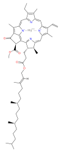

chlorophyll-a

Definition: Chlorophyll a is a specific form of chlorophyll used in oxygenic photosynthesis. It absorbs most energy from wavelengths of violet-blue and orange-red light, and it is a poor absorber of green and near-green portions of the spectrum. Chlorophyll does not reflect light but chlorophyll-containing tissues appear green because green light is diffusively reflected by structures like cell walls. This photosynthetic pigment is essential for photosynthesis in eukaryotes, cyanobacteria and prochlorophytes because of its role as primary electron donor in the electron transport chain. Chlorophyll a also transfers resonance energy in the antenna complex, ending in the reaction center where specific chlorophylls P680 and P700 are located.
Source: Wikipedia
Wikipedia Page (Something wrong with this association? Let us know.)
Wikidata Page (Something wrong with this association? Let us know.)